工作內容

一、工作環境介紹
工作單位為元智大學資訊管理系，工作環境為1509b，內有電腦與座位，是我們四個實習生的研究場所。
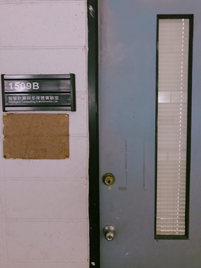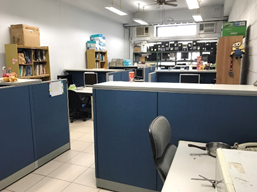
實驗室介紹
成立宗旨：
本實驗室致力於以資訊科技結合統計分析技術、決策科學、最佳化理論與演算法設計，輔助個人或企業之決策制定與問題解決，以提升決策品質與經營效率。目前應用的領域包括醫療健康照護產業、服務業等。
實驗室特色：
1.研究生實際參與學習決策支援系統之需求分析、系統設計、決策模式與演算法發展、程式撰寫、測試與評估。
2.活用理論、積極進行產學合作
(1)參與老人福祉科技中心之整合計畫，進行跨領域之研究，歷年合作機構包含清華大學決策分析實驗室、台北榮總神經外科、署立桃園醫院、亞東醫院、敏盛醫院、署立桃園療養院。
(2)參與資源最佳化暨運籌管理相關研究計畫，歷年合作機構包括中山科學研究院、工業技術研究院、長榮國際儲運、大榮汽車貨運等。
二、工作詳述
程式設計、資料分析-R語言
R語言為一種自由軟體程式語言與操作環境，主要用於統計分析、繪圖、資料探勘。最大的優勢就是免費、活躍的動態系統、持續地增加新的套件和內建豐富的功能集。最近的調查顯示，R 在資料科學界裡為目前為止最受歡迎的語言，特別是視覺化工具。
我使用R-Studio寫資料分析程式，主要分析健保資料庫大數據和空氣污染資料，再探討兩者之間是否有關連性，並嘗試進行疾病的預測。
(2) 記錄研究成果
此專題為類似研究生寫論文的方式，實習生會將每段時間的研究結果記錄下來，製作成簡報，並在禮拜五開會時上台報告。也會撰寫每週工作日誌，紀錄目前進度、預計下週進度、未來方向等有計畫的研究。
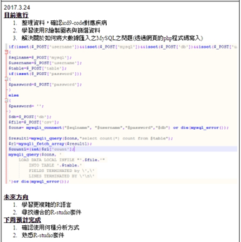
三、實習期間完成之進度
- 取得健保大數據(心血管疾病)資料與全台地區空氣汙染資料
- 整理取得的資料並確定每個欄位(專業資訊部分詢問學長姊)
- 規劃研究步驟與方法
- 先從全台空氣汙染開始找出控制組與對照組(找出都市化程度差不多，空氣汙染卻有明顯較高與較低的地區)
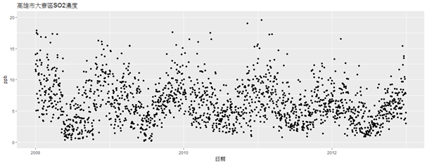
從這個汙染數據跟報導，可以預測2009年初高雄大寮的住院檔及門診檔，對於環境污染導致的疾病病人數量將會增加，也能從污染對照病人發病時間來預測疾病影響人體的時間。
使用R-Studio畫出折線圖必較
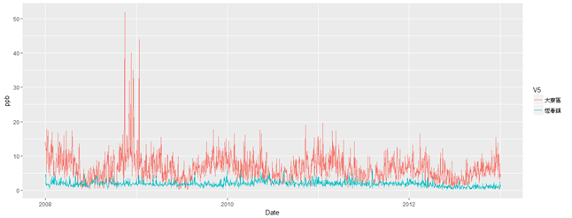
目前研究成果
可以從折線圖中看出SO2汙染最嚴重的高雄大寮區，除了在2009年產生了極端值，其汙染數值隨季節規律變化。至於2009年的極端值，我根據時間與地區去找相關報導，找到了「2009新聞回顧：潮寮毒氣案求償」。
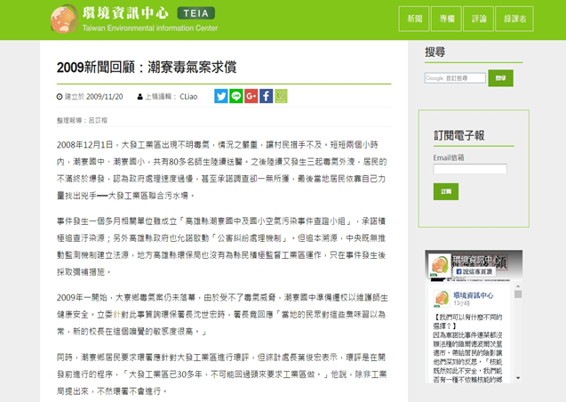
大發工業區空氣污染事件，是2008年12月發生在台灣高雄縣大寮鄉（今高雄市大寮區）大發工業區的4次空氣污染事件。汙染源被懷疑是工業區內的汙水處理廠。曾經導致當地的潮寮國中與潮寮國小的多名師生集體送醫。
四、工作當中扮演的角色
我們幾個專題生都有不同的專題題目，題目也都是跟研究室專長相關，在校內實習扮演著類似研究生的角色。跟研究生一樣匯報研究進度，以及上台報告研究成果，一點點培養對研究的專業與上台表達的能力。
學習

一、計畫書的撰寫
為了申請大專生計畫，在寒假緊迫的時間內完成了科技部國科會大專生計畫申請書，從摘要、研究動機、研究問題開始都要自己摸索怎麼寫。從寫論文的角度開始思考要研究的問題與專業性，是很棒的經驗。
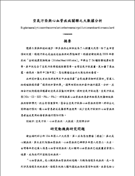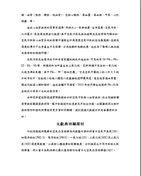
分析方法：
灰色關聯分析演算法(暫定)
- 先確定要分析的參考(標準)數列
有一組X0(k)=(x0(1)，x0(2)，x0(3)…，x0(n))在灰色關聯空間中
其中i=1，2，…，mk=1，2，…nN
X為研究因數數量，x0，x1，x2，…對應每個影響心血管疾病的因數
γ(x0(k)，xi(k))=Δmin.+ζΔmax.Δ0i(k)+ζΔmax.
- 建立比較數列Xi(k)=(xi(1)，xi(2)，xi(3)…，xi(n))
- 將就醫地區與居住地區在同一範圍內的資料進行篩選
- 對參考數列和比較數列進行無綱量化處理
灰關聯度的定義為：
當辨識繫數ξ愈趨近於1時，表示參考數列與比較數列關聯程度愈高；反之當ξ愈趨近於0時，則參考數列與比較數列關聯程度愈低。
（3）求參考數列與比較數列的灰色關聯繫數
二、自我學習新的工具與程式語言
在做研究的時候，可能會需要用到各種工具，這些工具大部分都是我們在大學必修課中不會學習到的。像是在整理研究室的時候就學到了剪網路線，看似很複雜在剪了好幾條之後就覺得是件簡單的工作。還有在學習處理大數據資料的時候，平常常用的Excel工具因為檔案過大無法開啟，於是要使用R-studio來開啟與瀏覽資料。當需要將資料輸入進資料庫內，就要使用到Mysql資料庫配合php語法，看似單一份研究其實包含的多層面的應用。
全民健保資料庫的資料量相當龐大，若要使用完整資料做研究將會耗費大量時間且需要能夠負荷資料量的運算器材卻又可能有顯著誤差。「全民健康保險研究資料」百萬人抽樣檔為解決的方式之一。
ICD9代碼 |
疾病名稱 |
ICD9代碼 |
疾病名稱 |
390 |
未提及侵及心臟之風濕熱 |
415 |
急性肺性心臟病 |
391 |
侵及心臟之風濕熱 |
416 |
慢性肺性心臟疾病 |
392 |
風濕性舞蹈症 |
417 |
其他肺循環疾病 |
393 |
慢性風濕性心包膜炎 |
420 |
急性心包膜炎 |
394 |
風濕性二尖瓣疾病 |
421 |
急性及亞急性心內膜炎 |
395 |
主動脈瓣疾病 |
422 |
急性心肌炎 |
396 |
二尖瓣及主動脈瓣疾病 |
423 |
其他心包膜疾病 |
397 |
其他心內膜構造疾病 |
424 |
其他心內膜疾病 |
398 |
其他風濕性疾病 |
425 |
心肌病變 |
401 |
自發性高血壓 |
426 |
傳導障礙 |
402 |
高血壓性心臟病 |
427 |
心臟性節律不整 |
403 |
高血壓性腎臟疾病 |
428 |
心臟衰竭 |
404 |
高血壓性心臟及腎臟疾病 |
429 |
診斷欠明之心臟疾病及其併發症 |
405 |
續發性高血壓 |
440 |
動脈粥樣硬化 |
410 |
急性心肌梗塞 |
441 |
主動脈瘤 |
411 |
其他急性及亞急性缺血性 |
442 |
其他動脈瘤 |
412 |
陳舊型心肌梗塞 |
443 |
其他末梢管疾病 |
413 |
心絞痛 |
444 |
動脈栓塞血栓症 |
414 |
其他型態之慢性缺血性心臟病 |
|
|
三、講習與訓練證明
人體研究倫理審查委員會IRB全名Institutional Review Board，宗旨為遵守世界衛生組織赫爾辛基宣言最新版及衛生福利部藥品優良臨床試驗規範最新版之醫學研究人體試驗的倫理標準，加強醫療人員倫理教育，以保障病患、受試者及所有參與研究人員的權利及義務，以提升臨床研究水準。
因為我研究的專題會使用到百萬人抽樣檔，為配合醫療法/人體試驗管理辦法/人體研究法等法規，凡有意願擔任人體研究/試驗計畫主持人或研究團隊，皆需依藥品優良臨床試驗準則（GCP）第14條規定，所有參與試驗執行之人員，應有符合工作資格之教育、訓練及經驗。全程參加活動並完成考試評估者核發課程「訓練證明」6小時，認證考試及格者加發「訓練證明」2小時，以作為未來執行人體研究/試驗等資格之認定。
此課程會邀請多位優秀學者及醫生進行講座，讓我們能夠具備更多醫療知識與有衡量研究與倫理之間的平衡和界線的能力。
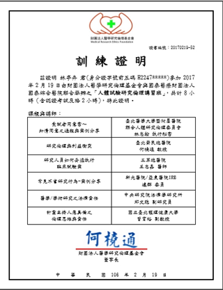
四、論文與期刊、相關資料查找
有時候要提出一個假設必須要有一些學術論文論點的支持，也能夠過前輩們研究出來的成果來進行下一步研究的規劃。像是台灣跟中國的學術文章，可以在華藝線上圖書館查找，元智大學的帳號跟密碼可以登入。大部分期刊跟文章皆可下載，是資源很豐富的網站。
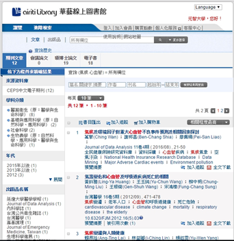
▼台灣博碩士論文加值系統
「臺灣博碩士論文知識加值系統」為教育部委託國家圖書館執行的專案計畫，回溯國內博碩士論文相關資料整理工作的投入，國家圖書館早在民國59年起即著手編印「中華民國博士碩士論文目錄」，自民國83年以來，國家圖書館正式接受教育部高教司之委託，執行「全國博碩士論文摘要建檔計畫」。
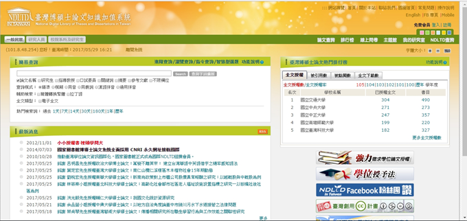
▼行政院環保署污染物濃度與污染副指標值對照表
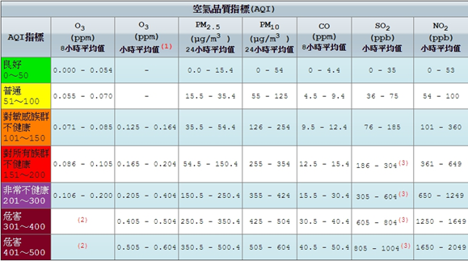
行政院環保署空氣品質監測網http://taqm.epa.gov.tw/taqm/tw/default.aspx
有該地區的O3(ppb)臭氧、PM2.5(μg/m3)細懸浮微粒、PM10(μg/m3)懸浮微粒、CO(ppm)一氧化碳、SO2(ppb)二氧化硫、NO2(ppb)二氧化氮
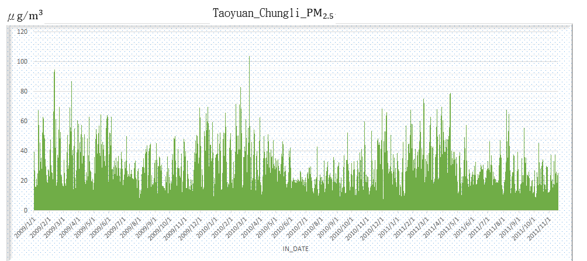
比較圖

自我評估及心得感想

在研讀各方專家學者的論文時，發現需要更加強英文能力與專有名詞的認識，不管任何領域，語言和文字都是的重要性都是很高的。
以及每週與研究生的開會，在台下觀摩學長姊的研究進度跟模擬論文口試，像是報告的內容、內容順序、研究架構圖、資料分析方法、遇到口試委員提出不知道答案的問題時的對方法等，都是很棒的參考。
未來的研究步驟將會開始資料分析與預測的方向進行，也會更著重於自己的R語言程式撰寫能力。
暑期心得
在暑假依然要保持進度是跟以前很不一樣的地方，也是學生慢慢轉變為社會人的感慨。在實習期間覺得學校學的東西遠遠不夠，希望能好好利用剩下的時間來完成專題。
對系上的建議